Префектура Хоккайдо · Саппоро · кафе
Nagayama Rest в Саппоро: кафе в доме «отца тондэнхэй» и общежитии Mitsubishi
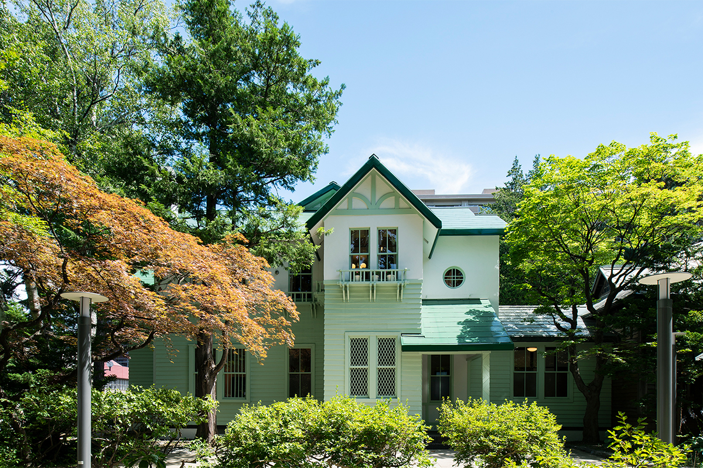
В центре Саппоро, в тихом парке, стоит деревянный дом конца XIX века, а к нему пристроено светло-зелёное общежитие горнодобывающей компании. В бывшей столовой этого дома открылось кафе Nagayama Rest, где японское и западное соединены во всём: от мебели до меню.
История
Дом «отца тондэнхэй»
Освоение Хоккайдо в эпоху Мэйдзи во многом держалось на тондэнхэй, солдатах-поселенцах, которые охраняли север и одновременно распахивали землю. Человека, который стоял за этой системой, называли «отцом тондэнхэй». Его звали Такэсиро Нагаяма.
Свой частный дом Нагаяма построил в Саппоро, на месте нынешнего мемориального парка Нагаямы. Считается, что дом появился в 1880 году. В 1911 году землю и здание купила компания Mitsubishi, а в 1937 году к дому пристроили общежитие горнодобывающего отделения Mitsubishi.
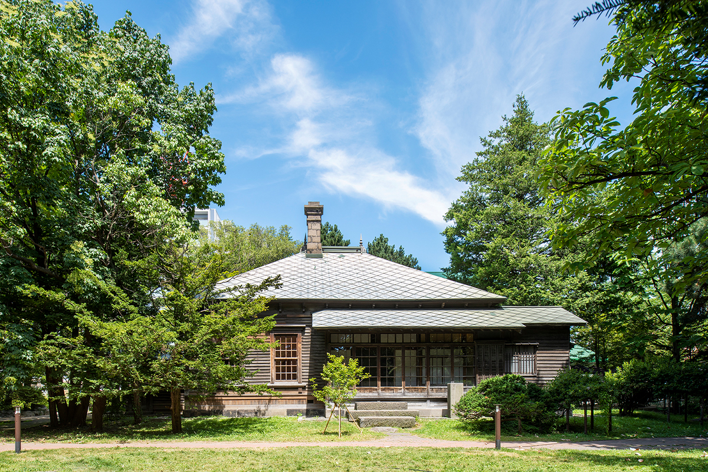
В 2018 году весь комплекс под названием «бывшая резиденция Такэсиро Нагаямы и бывшее общежитие Mitsubishi» получил статус материального культурного достояния Хоккайдо. Здание укрепили против землетрясений, отремонтировали и открыли для гостей как место, где можно узнать историю освоения острова.
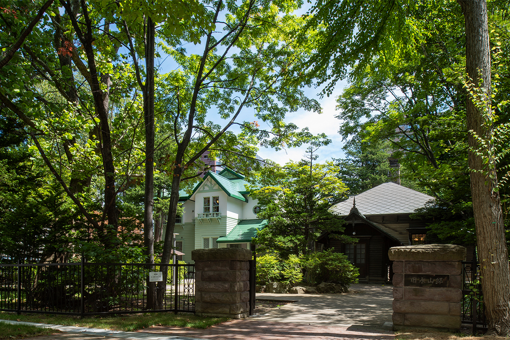
Кафе
Столовая, которая была кладовой
Одной из главных идей ремонта было найти применение старой столовой, которую много лет использовали как кладовку. Так появилось «кафе в японско-западном стиле» Nagayama Rest. Им управляет WONDER CREW, у которой много ресторанов в Саппоро, а всю творческую часть, от концепции до интерьера, взяла на себя саппорская дизайн-студия STUDIO WONDER.
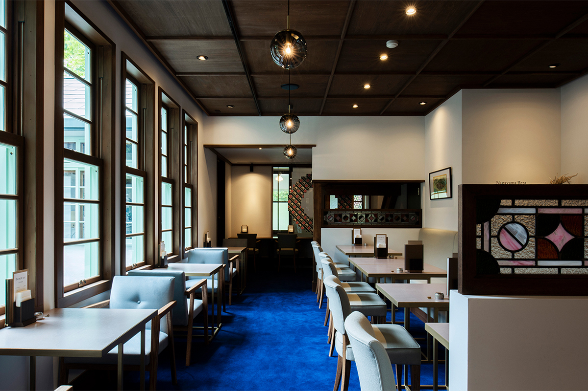
Главное в этом кафе сам дом. Интерьер подстроили под историческое здание, а не наоборот. Стены, пол и потолок в основном отделаны заново, но кое-что оставили как было, например столб под лестницей. Стойки, столы и диваны сделаны специально для этого зала. Стойка у входа служит и кассой, и витриной для фирменных товаров. Её форма повторяет старинные европейские прилавки, но с современными деталями, чтобы она сочеталась с «западной» частью дома.
Стулья французского дизайна с изящными изогнутыми линиями поставили к прямым строгим столам собственной разработки. Латунь с патиной и деревянные столешницы смягчают интерьер, и классика уживается с современностью. Кафе стоит внутри культурного памятника, но ощущается новым, и время здесь проходит спокойно.
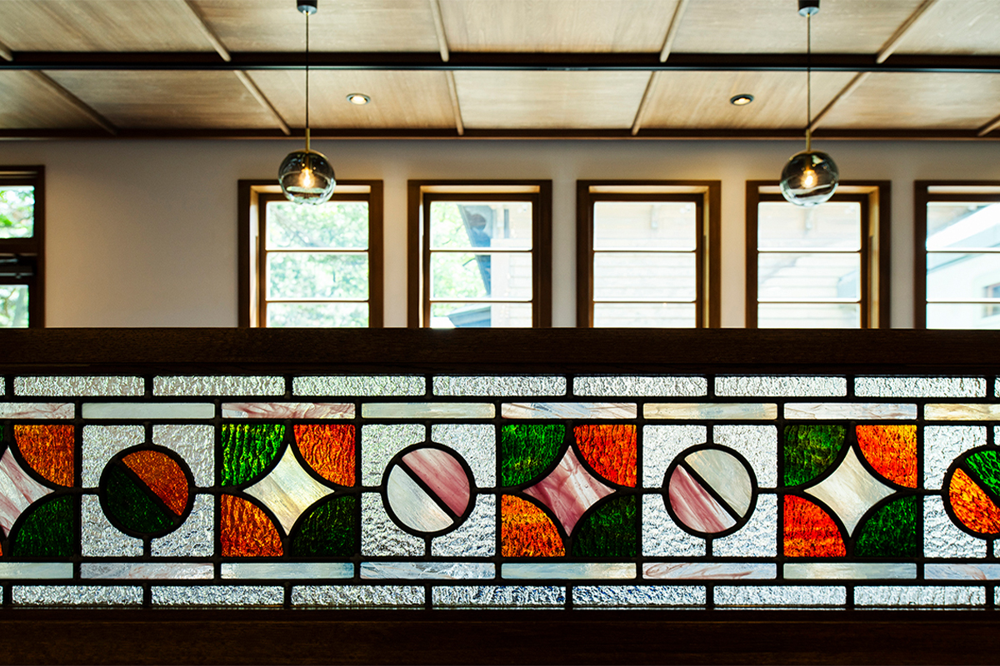
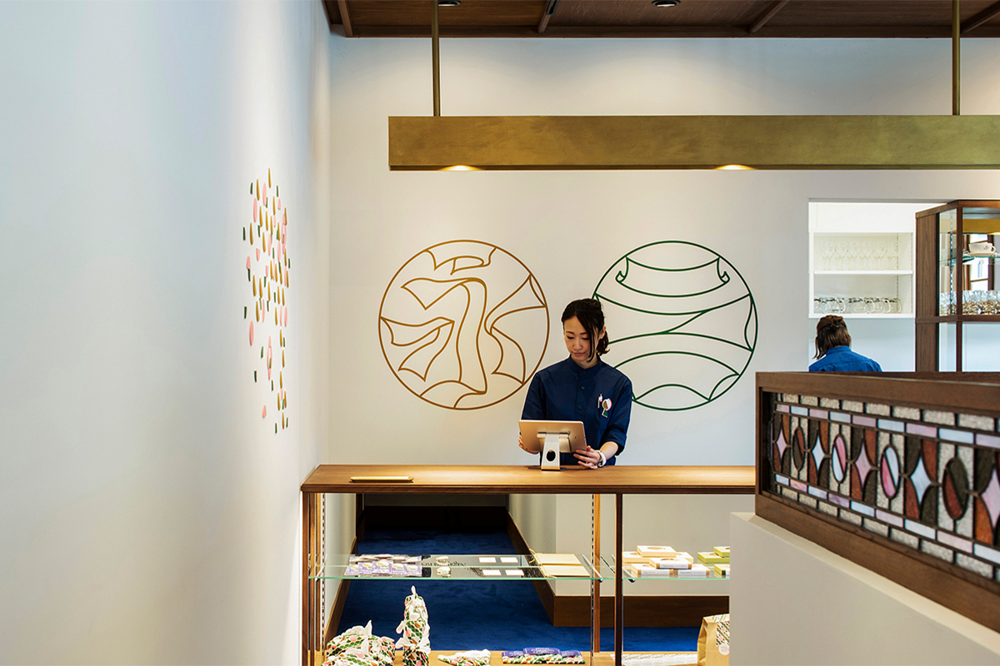
Если войти со стороны общежития Mitsubishi, прямо перед вами окажется большое стеклянное окно в зал кафе. Его добавили при ремонте.
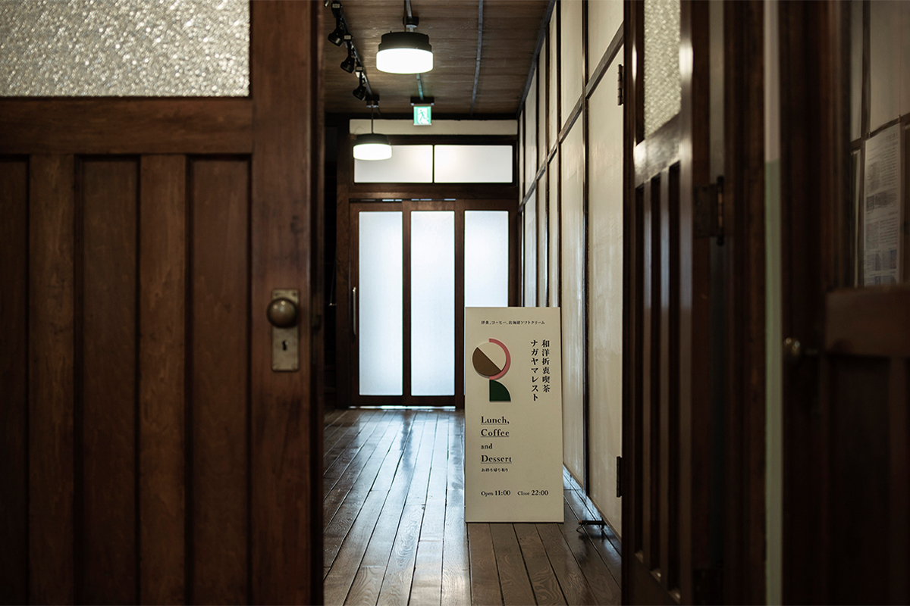
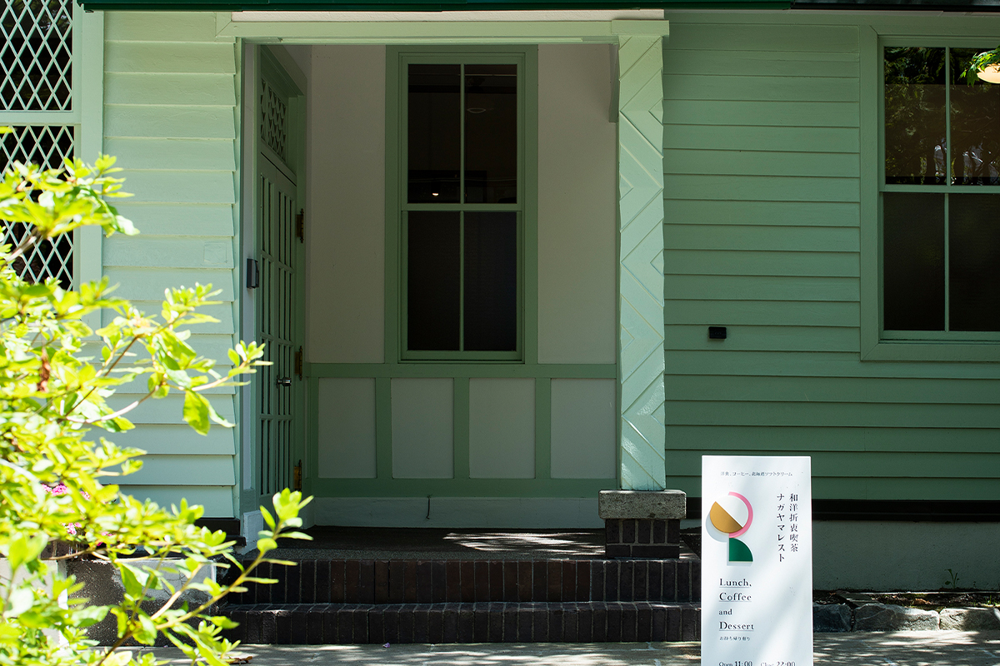
На стекле поместили большой монумент в форме венка: узор тянется, как плющ, а цвета взяты из парка и самого здания. Так кафе выражает свою идею: культурное наследие надо передавать дальше.
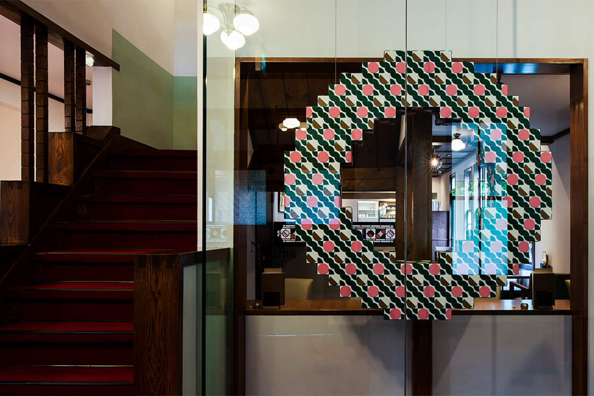
Деталь
Почему ковёр синий
Первое, что бросается в глаза в зале, это ярко-синий ковёр. Он отмечает границу между музейной частью здания и кафе. Смена покрытия на такой границе дело обычное, но у цвета есть своя причина. В общежитии лежат красные ковры, а здесь выбрали синий, цвет флага Управления по освоению Хоккайдо (Кайтакуси).
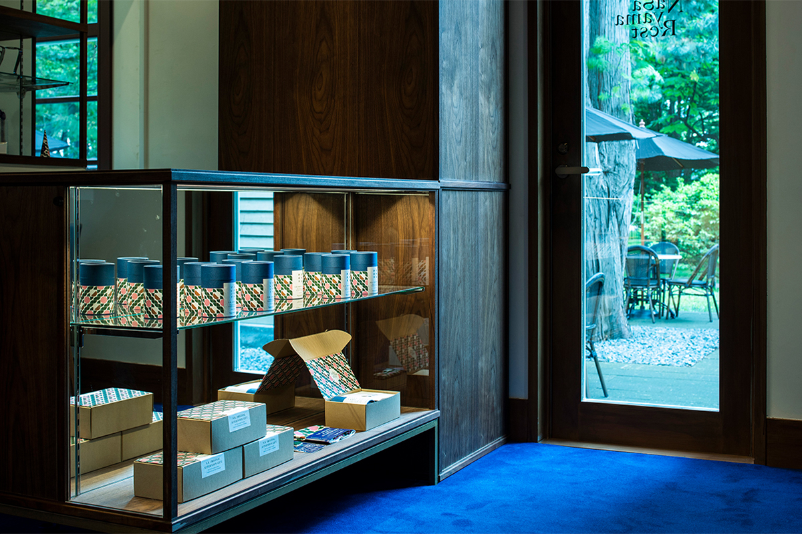
Меню
Парфе, рагу и крем-сода
Меню здесь тоже соединяет старое и новое: это классика японских кафе в духе прошлого века. Для парфе берут мягкое мороженое фермы «Хокко» из Токати. Пять видов парфе есть всегда, а каждый месяц к ним добавляют сезонное. Говяжье рагу готовят с самого открытия, подливая новое к старому, и от долгого томления вкус становится глубже.
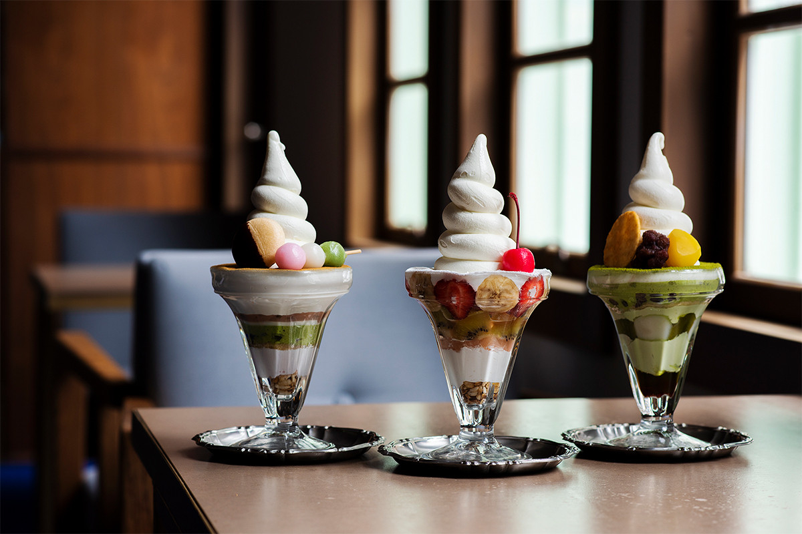
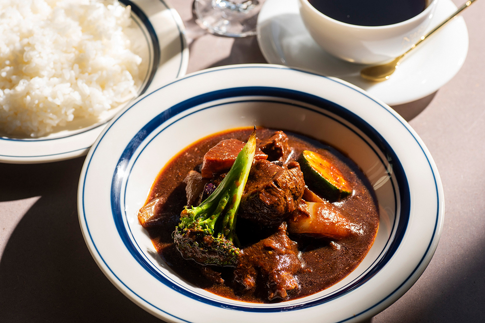
Фирменный кофе тёмной обжарки подходит и к еде, и к десерту. Он не слишком горький и не слишком лёгкий, и в кафе советуют выпить его после еды. Молотый кофе можно купить с собой.
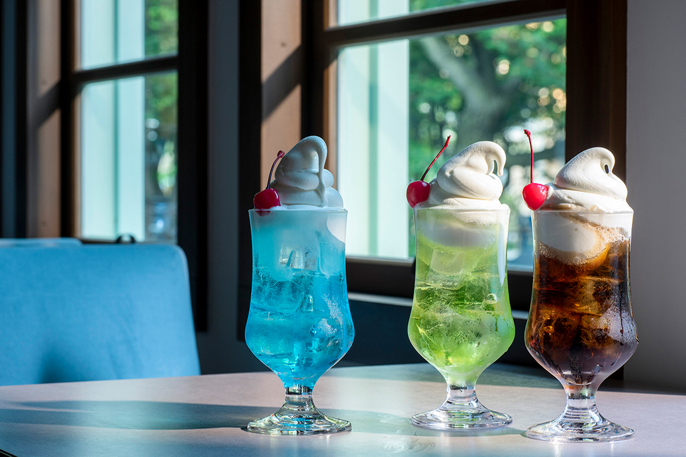
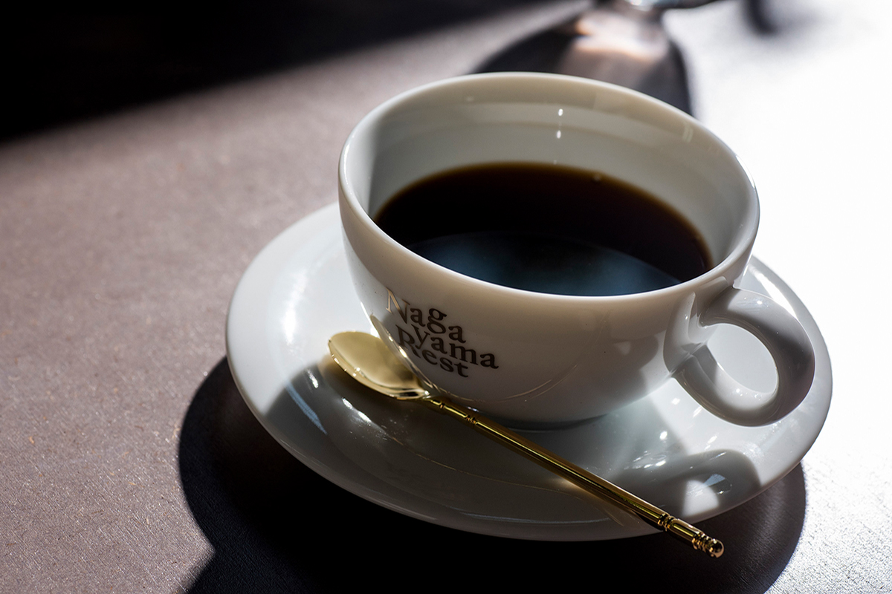
Nagayama Rest показывает историю здания и его сегодняшний день одновременно. Сюда стоит прийти не только ради интерьера и меню, но и чтобы увидеть, как дизайн помогает старому дому жить дальше.
Nagayama Rest
- Адрес
- префектура Хоккайдо, Саппоро, район Тюо, Кита-2-дзё Хигаси, 6-2
- Телефон
- +81 11-215-1559
- Часы работы
- 11:00–20:00 (еда до 19:00, напитки до 19:30)
- Выходные
- вторая среда месяца, новогодние праздники